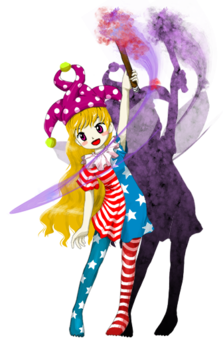

- Welcome to Touhou Wiki!
- Please register to edit. For assistance, check in with our Discord server or IRC channel.
Clownpiece
| クラウンピース Clownpiece kɯᵝɾ̠a̠ɯ̃ᵝmpiːsɯᵝ | |
|---|---|
|
 Clownpiece in Legacy of Lunatic Kingdom Fairy of HellMore Character Titles | |
| Species | |
| Abilities |
Driving people to madness |
| Location |
Sea of Tranquility (During Legacy of Lunatic Kingdom events) |
Music Themes | |
|
星条旗のピエロ (Legacy of Lunatic Kingdom) | |
Appearances | |
| Official Games | |
| |
| Print Works | |
| |
Clownpiece (クラウンピース Kuraunpīsu) is a fairy of Hell. She is also one of the protagonists of Visionary Fairies in Shrine.
General Information[edit]
Clownpiece appeared as the Stage 5 Boss in Legacy of Lunatic Kingdom and as one of the protagonists of Visionary Fairies in Shrine, along with Sunny Milk, Star Sapphire, and Luna Child. She is Hecatia Lapislazuli's subordinate, who has instructed her to live in Gensokyo for the time being. She currently lives under the Hakurei Shrine in a replica Hell she made for herself. Other characters often refer to her as "Piece", a shortening of her name.
Personality[edit]
Clownpiece is similar in nature to many of the other fairies in Touhou: she is playful, mischievous, childish, and a little bit dumb. She enjoys the aesthetics of Hell, often leading to strange looks from others; however, this is because it reminds her of home. She enjoys pranking anybody she can, friends included. She often joins the Three Fairies of Light in their own schemes, pranks, and adventures, and has a little bit of a rivalry with Cirno over the title of the "strongest". Generally, she is a fun-loving person who's also a little bit ignorant of her surroundings: she's set fire to the Hakurei Shrine by accident on more than one occasion.
Abilities[edit]
Driving people to madness
- With the flame of her torch, Clownpiece is able to drive others insane. According to herself, any human looking at the light of her torch would be unable to maintain their sanity, making her able to mess with their minds.[1] In the Human Village, she used this ability to make villagers extremely irritable and short-tempered, attacking each other for trivial reasons. According to her, going crazy means bringing out one's true strength.[2]
- Clownpiece claims that, while this may seem like an unusual power for a nature spirit, it's nothing strange in Hell where "nature" consists mainly of the souls of the dead. The torch itself is made with the lifeforce of those that fell in Hell.[3]
Making lifeforce go berserk
- The true power of Clownpiece's flame is revealed by Eternity Larva, who recognized the power she experienced during the Four Seasons incident. The flame of the torch is able to affect the lifeforce and make it go berserk. Eternity used this power in full winter to instantly make it summer near the Hakurei Shrine, filling bare trees with leaves, and even turning some of them into palm trees. Although this completely consumed the torch's fire, she assumed it would eventually be back on its own.[3]
Embodiment of impurity
- Clownpiece was among the fairies exposed to Junko's abilities prior to the events of Legacy of Lunatic Kingdom, transforming her into a being of pure lifeforce whom the Lunarians could not fight without becoming permanently tainted. It's unclear whether this is still true by the time she comes to Gensokyo.
Background Information[edit]
Origin[edit]
Clownpiece is based on lampads[4], nymphs who serve the goddess Hecate, the basis of Hecatia. Lampads accompany Hecate on her night-time travels and carry torches which have the power to drive someone to madness, like Clownpiece.
Design[edit]
Clownpiece wears leggings and a shirt with the pattern similar to the American flag. As she resembles a jester, she has a frilled collar and a purple, polka-dotted jester's hat. She has long, blonde hair and pink eyes. She also has a pair of fairy wings and carries a torch.
Appearances[edit]
Games[edit]
| Attention: This section is a stub and it needs expanding with more information related to the section's topic. If you can add to it in any way, please do so. |
- Legacy of Lunatic Kingdom
Literature[edit]
- Visionary Fairies in Shrine
While setting up a prank on Reimu Hakurei, The Three Fairies of Light hear her make mention of a new fairy. Curious about her identity, they travel to the Human Village, where they find Clownpiece manipulating the minds of the humans there, causing them to become aggressive toward one another. When confronted by The Three Fairies of Light, Clownpiece explains her power to drive people mad, and mentions that she is from Hell, but doesn't want to return there. Impressed by her ability, they invite her to live with them, but she declines, stating that she has someone else to live with. At the mention of pranking opportunities, however, Clownpiece expresses curiosity toward their abilities, and they introduce themselves. However, Clownpiece fails to comprehend and memorize their fairly simple introduction, so Sunny Milk tells her not to worry about it. Luna Child warns Clownpiece not to play her pranks in the Human Village, because the Shrine Maiden has her eye on Clownpiece. With that, The Three Fairies of Light depart home. As they leave, Clownpiece remarks her interest in the three of them.
Relationships[edit]
Junko tried to fill the moon with fairies' life forces by using her ability and Clownpiece.
Clownpiece is a subordinate of Hecatia, who allows Junko to use Clownpiece in her scheme against the Lunar Capital.
Gallery[edit]
Clownpiece's winter outfit as seen in Visionary Fairies in Shrine

Clownpiece on the back cover of Alternative Facts in Eastern Utopia
Eternity Larva using Clownpiece's torch to make it summer near the Hakurei Shrine (Visionary Fairies in Shrine).
Spell Cards[edit]
| Name | Translated | Comments | Games | Stage | ||
|---|---|---|---|---|---|---|
| Total: 12 | ||||||
| 獄符「ヘルエクリプス」 | Hell Sign "Hell Eclipse" | LoLK | St. 5: E/N | |||
| 獄符「地獄の蝕」 | Hell Sign "Eclipse of Hell" | LoLK | St. 5: H/L | |||
| 獄符「フラッシュアンドストライプ」 | Hell Sign "Flash and Stripe" | LoLK | St. 5: E/N | |||
| 獄符「スターアンドストライプ」 | Hell Sign "Star and Stripe" | LoLK | St. 5: H/L | |||
| 獄炎「グレイズインフェルノ」 | Hellfire "Graze Inferno" | LoLK | St. 5: E/N/H | |||
| 獄炎「かすりの獄意」 | Hellfire "Infernal Essence of Grazing" | LoLK | St. 5: L | |||
| 地獄「ストライプドアビス」 | Inferno "Striped Abyss" | LoLK | St. 5: E/N/H/L | |||
| 「フェイクアポロ」 | "Fake Apollo" | LoLK | St. 5: E/N | |||
| 「アポロ捏造説」 | "Apollo Hoax Theory" | LoLK | St. 5: H/L | |||
| 獄符「バースティンググラッジ」 | Hell Sign "Bursting Grudge" | VD | Wrong Monday - 2 | |||
| 獄符「ダブルストライプ」 | Hell Sign "Double Stripe" | VD | Wrong Monday - 3 | |||
| 月夢「エクリプスナイトメア」 | Moon Dream "Eclipse Nightmare" | VD | Wrong Monday - 4 | |||
Additional Information[edit]
- Her character art pose resembles the Statue of Liberty.
- She chose to use the star-spangled pattern on her clothes after having seen the American flag on the Moon.[4]
- When asked in an interview with Toby Fox, ZUN mentioned that Clownpiece was designed with the American flag and in the Statue of Liberty pose because he thinks of the Lunar Capital as China and thus the natural enemy is America[5]
Fandom[edit]
Official Profiles[edit]
| ○５面ボス 地獄の妖精 クラウンピース
地獄の妖精。 妖精は大抵の場所にいる。勿論地獄にもいる。 彼女はヘカーティアに命令されて、静かの海を地獄から連れてきた妖精達で満たした。
「お前達がここらで遊んでいてくれれば、月の民は手が出せない。 と言われて、彼女は大いに遊んだ。 月面は、荒涼とした世界だったが、地獄に比べればまだ美しく、楽しい世界だった。
「もし、月の都から出てくる者があったら、何をしても良い」 |
Stage 5 Boss - Fairy of Hell Clownpiece Species: Fairy A fairy from Hell. Fairies can be found just about anywhere; Hell is no different. Under Hecatia's orders, she filled the Sea of Tranquility with fairies she brought with her from Hell. Then, thanks to Junko's ability, they were awakened. "If you play around here, the Lunarians will be unable to act. ...that's what she was told. So, she played to her heart's content. The lunar surface was a desolate world, but compared to Hell, it was still beautiful and fun. Though the Lunar Capital showed no signs of action for a long time, "If anyone comes from the Lunar Capital, go wild. Do anything you like." |
Official Sources[edit]
- 2015/08/14 Legacy of Lunatic Kingdom - omake.txt (profile, Stage 5 dialogue)
References[edit]
- ↑ 1.0 1.1 Visionary Fairies in Shrine - Chapter 1
- ↑ Legacy of Lunatic Kingdom - Sanae's scenario: Clownpiece: Y'see, the light from my torchdrives anyone it touches crazy. And going crazy means bringing out your true strength. I'm gonna beat you down with this tremendous power!
- ↑ 3.0 3.1 Visionary Fairies in Shrine - Chapter 10
- ↑ 4.0 4.1 Strange Creators of Outer World/Legacy of Lunatic Kingdom interview with ZUN - Clownpiece section.
- ↑ Interview with Toby Fox, ZUN and Yoshiro Kimura
| This page is part of Project Characters, a Touhou Wiki project that aims to write proper descriptions for all official characters of Touhou Project. Please keep the character page guidelines in mind when contributing. |